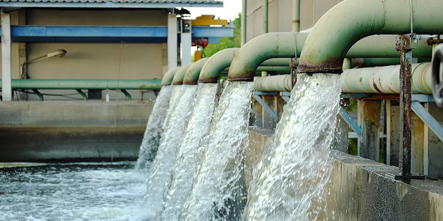
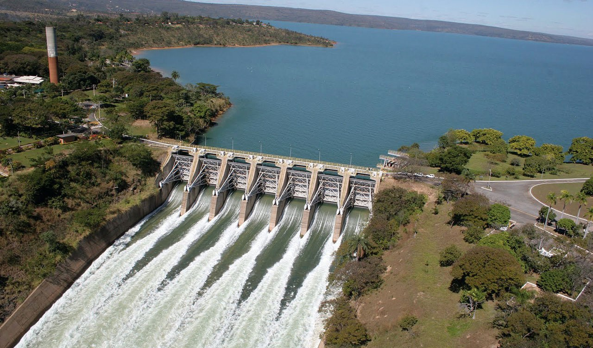
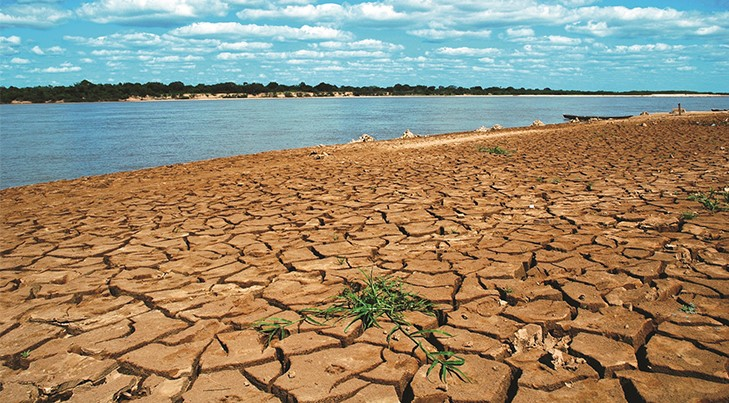

Recursos Hídricos
Os recursos hídricos são essenciais para a vida na Terra e desempenham um papel fundamental em diversos aspectos das atividades humanas e dos ecossistemas. Eles incluem todas as fontes de água, tanto superficiais quanto subterrâneas, e englobam rios, lagos, aquíferos, oceanos, geleiras, entre outros. A gestão e a preservação desses recursos são vitais para garantir o abastecimento de água potável, a produção de alimentos, a geração de energia e a manutenção dos ecossistemas. Vamos explorar alguns aspectos importantes sobre os recursos hídricos:
Tipos de Recursos Hídricos
Água Superficial:
Rios e Lagos: Fontes de água que correm ou se acumulam na superfície terrestre. São usados para abastecimento público, irrigação, recreação e pesca.
Reservatórios e Represas: Corpos d'água criados pelo homem para armazenar água para consumo, controle de enchentes, geração de energia hidrelétrica e outras finalidades.
Água Subterrânea:
Aquíferos: Reservatórios de água subterrânea que podem ser acessados através de poços. São uma fonte crucial de água potável, especialmente em áreas onde a água superficial é escassa.
Lençóis Freáticos: Camadas de água localizadas abaixo da superfície do solo que alimentam aquíferos.
Água Marinha:
Oceano e Mares: Cobrem cerca de 71% da superfície da Terra e são importantes para a regulação climática, transporte, pesca e fornecimento de recursos minerais e energéticos.
Geleiras e Calotas Polares:
Armazenam uma grande quantidade de água doce na forma de gelo, que, quando derretida, alimenta rios e lagos.
Importância dos Recursos Hídricos
Abastecimento de Água Potável: Essencial para a sobrevivência humana. A água deve ser de boa qualidade para evitar doenças.
Agricultura e Irrigação: A agricultura é um dos maiores consumidores de água, usada para irrigar culturas e manter a produção de alimentos.
Geração de Energia: A energia hidrelétrica é uma fonte renovável e limpa de energia, gerada a partir do movimento da água.
Manutenção de Ecossistemas: Os ecossistemas aquáticos dependem de fluxos de água equilibrados para sustentar a vida aquática e a biodiversidade.
Indústria: Muitas indústrias utilizam água em seus processos produtivos, seja para resfriamento, limpeza ou como matéria-prima.
Desafios na Gestão dos Recursos Hídricos
Escassez de Água: A disponibilidade de água é limitada e pode ser insuficiente para atender às demandas crescentes da população e da economia.
Poluição: A contaminação de corpos d'água por resíduos industriais, agrícolas e urbanos compromete a qualidade da água e a saúde pública.
Mudanças Climáticas: Alteram os padrões de precipitação e a disponibilidade de água, aumentando a incidência de secas e enchentes.
Uso Ineficiente e Desperdício: Muitas vezes, a água é utilizada de forma ineficiente, levando ao desperdício de um recurso precioso.
